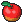

Das Ziel dieses Projekts ist, dass jeder ein eigenes Spiel programmiert.
Es ist wichtig, dass du zuerst das Grundgerüst erstellst. Danach kannst du später deine eigenen Soundeffekte oder Bilder ins Spiel einbauen.
The devil is in the details. Überspringe die Aufgaben nicht und versuche, den Code langsam zu verstehen. Wenn der Code zu lang und kompliziert wird, werde sogar ich Probleme haben, ihn zu verstehen.
Pygame Zero ist ein Python-Modul.
Ein Modul ist eine Python-Datei, die wiederverwendbaren Code enthält.
Anstatt alles selbst zu programmieren, nutzen wir Module, die von anderen entwickelt wurden.
Ein Beispiel ist das Turtle-Modul, das du in der 9. Klasse verwendet hast, um einfache Figuren zu zeichnen.
Für Spiele gibt es Module wie Pygame Zero, mit denen du leicht eigene Spiele entwickeln kannst.
Um ein Modul zu verwenden, musst du es importieren. Das funktioniert jedoch nur, wenn es zuvor installiert wurde.
Wir haben Pygame Zero bereits mit pip installiert.
spiel_nachname. Speichere darin deine Spieldateien.images und sounds.images und sounds lauten.images und alle Sounds im Ordner sounds.script.py.script.py gehört direkt in den Hauptordner, nicht in die Unterordner.lsg_nachname. Schreibe darin deine Lösungen. Am Ende der Stunde gibst du die Datei über Teams ab, damit ich deinen Fortschritt sehen kann. Zum Projektabschluss muss die Datei mindestens die Lösungen zu allen Basisaufgaben enthalten.Die Ordnerstruktur sollte so aussehen:
spiel_nachname
├── images
├── sounds
├── script.py
└── lsg_nachname.txt
Beachte vor dem Start:
Den Code für dein Spiel schreibst du in die Datei script.py.
import pgzrun
WIDTH = 400
HEIGHT = 500
pgzrun.go()
pgzrun.go() am Ende weglässt?WIDTH und HEIGHT. Was passiert mit dem Fenster?Mit der Variablen TITLE kannst du einen Titel für das Spielfenster setzen.
import pgzrun
WIDTH = 400
HEIGHT = 500
TITLE = "Mein Spiel"
pgzrun.go()
images.Dein Ordner sollte jetzt so aussehen:
spiel_nachname
├── images
│ └── venusaur.png
├── sounds
├── script.py
└── lsg_nachname.txt
In Pygame Zero kannst du mit der Klasse Actor Bilder in dein Spiel einfügen. Ein Actor ist eine Spielfigur oder ein Objekt in deinem Spiel.
Nachdem du einen Actor erstellt hast, musst du ihn zeichnen. Dies sollte jedoch nur innerhalb der Funktion draw() erfolgen. Verwende dazu def draw():, um die draw()-Funktion zu erstellen, welche Pygame Zero regelmäßig aufruft. Der Actor wird dann mit player.draw() gezeichnet, wie folgt:
import pgzrun
WIDTH = 400
HEIGHT = 500
TITLE = "Mein Spiel"
player = Actor("venusaur")
player.x = 200
player.y = 200
def draw():
player.draw()
pgzrun.go()
player.x und player.y. Wie verschiebt sich die Figur?player.x = 550 setzt? Warum?Jetzt wollen wir unsere Spielfigur bewegen. Dazu ändern wir den Code wie folgt:
import pgzrun
WIDTH = 400
HEIGHT = 500
TITLE = "Mein Spiel"
player = Actor("venusaur")
player.x = 200
player.y = 200
def update():
if keyboard.left:
player.x -= 5
def draw():
player.draw()
pgzrun.go()
Pygame Zero ruft die Funktion update() regelmäßig auf. Die Funktionen draw() und update() haben ähnliche Aufgaben, sind jedoch für unterschiedliche Zwecke gedacht. Die Funktion draw() zeichnet die Spielfigur an ihrer aktuellen Position, während die Funktion update() dazu verwendet wird, die Spielfigur zu bewegen.
Erkläre, was player.x -= 5 macht. Ist es dasselbe wie player.x = player.x - 5?
player.x: 200.Warum bleibt die vorherige Position der Figur sichtbar, obwohl sie sich bewegt?
Ergänze den Code mit screen.clear() in der draw()-Funktion:
def draw():
screen.clear()
player.draw()
Was macht screen.clear()? Wie löst es das Problem aus Aufgabe 7?
Ergänze die Bewegungen für die Pfeiltasten oben, rechts und unten.
Wie kannst du steuern, wie weit sich die Figur pro Tastendruck bewegt?
Was passiert, wenn du zwei Tasten gleichzeitig drückst? Probiere diese Kombinationen aus: Links + Oben und Links + Rechts
if keyboard.left:
player.x -= 5
if keyboard.right:
player.x += 3
In welche Richtung bewegt sich die Figur, wenn du Links und Rechts gleichzeitig drückst? Warum?
Ergänze den folgenden Code in der update()-Funktion:
if keyboard.r:
player.angle += 10
player.angle += 10? Erkläre.Der Spieler soll das Spielfenster nicht verlassen. Übernimm die folgende Code-Änderung:
def update():
if keyboard.left and player.x > 0:
player.x -= 5
Was macht die Bedingung keyboard.left and player.x > 0? Warum kann der Spieler den linken Rand jetzt nicht überschreiten?
Ändere den Code so, dass der Spieler auch die anderen Ränder (rechts, oben, unten) nicht verlassen kann.
Lade das Bild 
herunter. Speichere es im Ordner images.
Dein Ordner sollte jetzt so aussehen:
spiel_nachname
├── images
│ ├── venusaur.png
│ └── apple.png
├── sounds
├── script.py
└── lsg_nachname.txt
Erstelle mit Hilfe der Klasse Actor ein Futterobjekt für das Spielfenster. Nutze dazu den folgenden Code:
apple = Actor("apple")
apple.x = 100
apple.y = 200
Ergänze die draw()-Funktion, um den Apfel zu zeichnen:
def draw():
screen.clear()
apple.draw()
player.draw()
apple.draw() und player.draw() geschrieben werden, eine Rolle? Warum oder warum nicht? Ändere die Koordinaten von apple und player auf denselben Wert und teste deine Vermutung.random-Modul arbeitenUnser Futter befindet sich aktuell an einer festen Position, da wir feste Werte für x und y verwenden. Das random-Modul hilft uns, zufällige Werte zu generieren, sodass der Apfel bei jedem Neustart an einer anderen Position erscheint.
Füge dem Code das random-Modul hinzu:
import pgzrun
import random
Ändere die Position des Apfels mithilfe von random.randint:
apple = Actor("apple")
apple.x = random.randint(0, 400)
apple.y = random.randint(0, 500)
random.randint(0, 400) macht.Wenn der Spieler den Apfel berührt, soll der Apfel an eine neue zufällige Position wechseln. Kollisionen können mit einer if-Bedingung und der Methode colliderect() erkannt werden. Dieser Code gehört in die update()-Funktion:
if player.colliderect(apple):
apple.x = random.randint(0, 400)
apple.y = random.randint(0, 400)
apple.colliderect(player) anstelle von player.colliderect(apple) verwendet würde?Wir möchten ein Punktesystem einbauen.
Jedes Mal, wenn die Spielfigur das Futter berührt, soll der Punktestand erhöht werden. Dafür erstellen wir eine neue Variable score, die wir auf null setzen. Diese Variable ist global und muss daher außerhalb der Funktionen update() und draw() definiert werden, z. B. direkt unter der Erstellung des Apfelobjekts:
apple = Actor("apple")
apple.x = random.randint(0, 400)
apple.y = random.randint(0, 500)
score = 0
Der Punktestand soll nur erhöht werden, wenn der Spieler den Apfel berührt. Ergänze dazu den folgenden Code unterhalb von if player.colliderect(apple)::
if apple.colliderect(player):
score += 1
apple.x = random.randint(0, 400)
apple.y = random.randint(0, 400)
Um globale Variablen innerhalb einer Funktion zu ändern, füge die folgende Zeile am Anfang der update-Funktion hinzu:
def update():
global score
Teste den Code erneut und überprüfe, ob er jetzt korrekt funktioniert.
Um den Punktestand in deinem Spiel darzustellen, nutzen wir die Funktion screen.draw.text(). Sie erlaubt es, Text an einer bestimmten Position im Spielfenster anzuzeigen. Ergänze deine draw()-Funktion wie folgt:
def draw():
screen.clear()
apple.draw()
player.draw()
screen.draw.text('Score: ' + str(score), (15, 10), color=(255, 255, 255), fontsize=30)
Was passiert, wenn du die Werte (15, 10) in der Funktion screen.draw.text() änderst? Ändere die Werte, teste das Programm und beschreibe, wie sich die Position des Textes im Spielfenster verändert.
Erkläre, was color=(255, 255, 255) bedeutet. Recherchiere, was RGB-Werte sind, finde den RGB-Wert für Rot und ändere die Farbe des Textes entsprechend.
Was macht der Parameter fontsize? Ändere den Wert und beschreibe, wie sich die Darstellung des Textes ändert.
Müssen die Parameter der Position und fontsize ganzzahlig sein, oder können sie auch Dezimalwerte haben?
Jedes Mal, wenn der Spieler den Apfel berührt, soll ein Essgeräusch abgespielt werden.
sounds.Der Ordner sollte so aussehen:
spiel_nachname
├── images
│ ├── venusaur.png
│ ├── apple.png
├── sounds
│ └── eating_sound.ogg
├── script.py
└── lsg_nachname.txt
Füge diesen Code in die update()-Funktion ein:
if apple.colliderect(player):
sounds.eating_sound.play()
score += 1
apple.x = random.randint(0, 400)
apple.y = random.randint(0, 400)
sounds.eating_sound.play() macht.